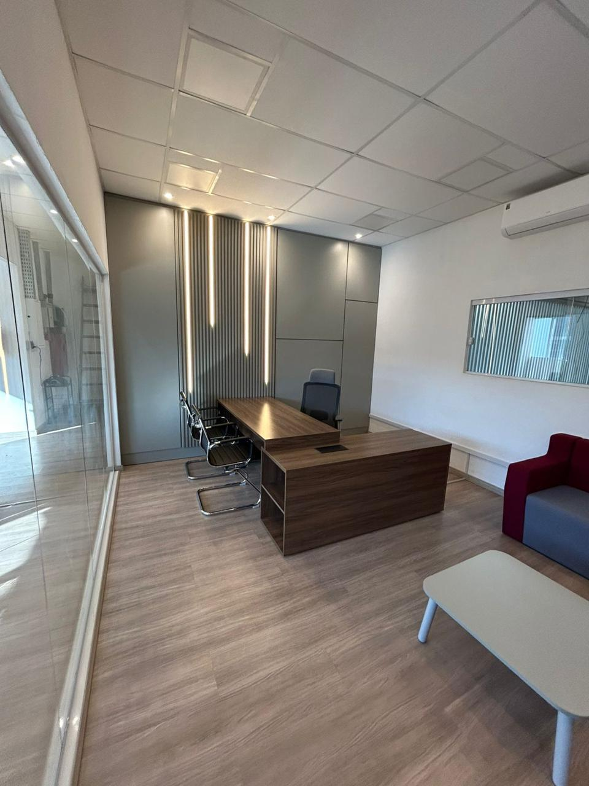
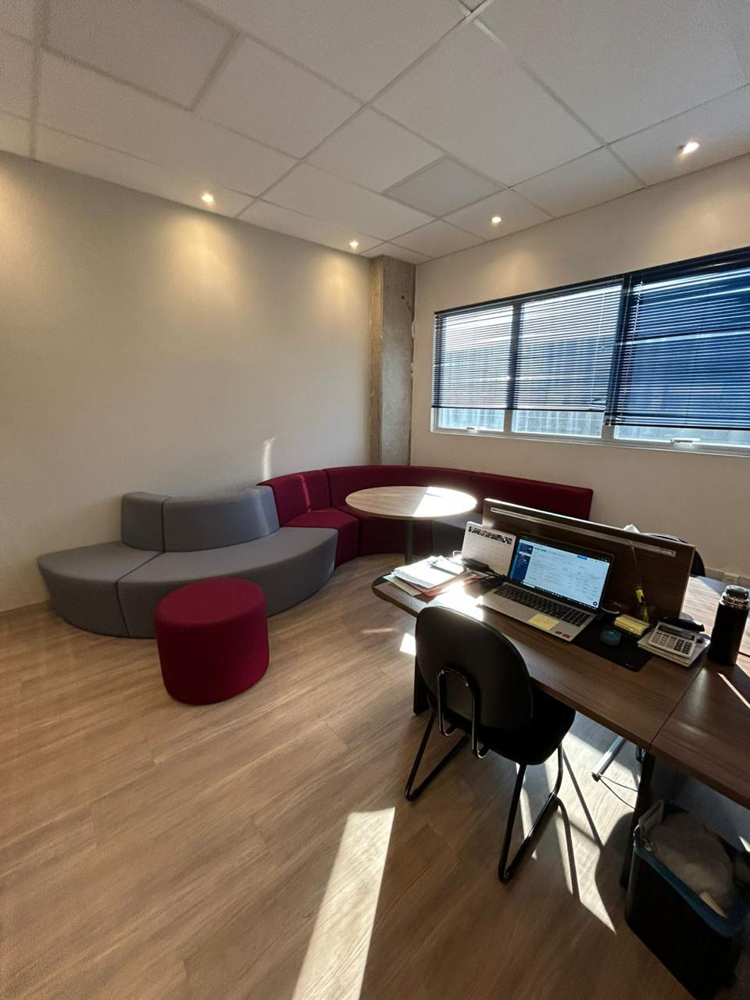

Pintura residencial
Novas cores para paredes e tetos de casas e apartamentos. Renove o visual e a sensação de estar em casa.
Quero renovar minha casaNOVAS CORES. NOVAS POSSIBILIDADES.
Da pintura aos detalhes da reforma, transformamos ambientes para você viver e trabalhar melhor.
Solicitar orçamento pelo WhatsAppConheça nossos trabalhos ↓
Cuidado em cada detalhe.
01 / O QUE FAZEMOS
Conte com a Cores de Betel para tirar a renovação do papel. Converse com a gente sobre o que seu espaço precisa.
Novas cores para paredes e tetos de casas e apartamentos. Renove o visual e a sensação de estar em casa.
Quero renovar minha casaAmbientes de trabalho com uma apresentação que valoriza seu negócio, dos escritórios às áreas de atendimento.
Vamos falar do meu negócioParedes e forros em drywall para reorganizar e renovar ambientes. Converse com a gente sobre seu projeto e os acabamentos.
Conversar sobre minha reforma
ESPAÇOS QUE TRANSFORMAM03 / CORES DE BETEL
Somos a Cores de Betel. Nossa marca reúne o que nos move: cor, transformação e soluções em reformas a seco.
Seja para renovar a casa ou dar uma nova cara ao trabalho, tudo começa com uma boa conversa sobre seu ambiente e o resultado que você procura.
Conte sua ideiaEnvie fotos e explique o que deseja renovar.
Alinhe os detalhesConverse sobre escopo, materiais e prazo.
Dê vida ao seu projetoCombine as etapas e o início do serviço.
04 / ANTES DE COMEÇAR
Clique em um dos botões de WhatsApp. Envie fotos do ambiente, medidas aproximadas, sua localização e o serviço desejado para avaliarmos a proposta.
Sim. A Cores de Betel trabalha com serviços de pintura e soluções em reformas a seco. Conte os detalhes do seu projeto para consultar as possibilidades.
O prazo depende do tamanho do ambiente, das condições das superfícies e dos serviços escolhidos. Informe seu bairro e cidade pelo WhatsApp para consultar atendimento e disponibilidade.
Se já tiver escolhido tintas, cores ou acabamentos, envie essas informações. O fornecimento e a escolha dos materiais podem ser alinhados durante o orçamento.
O PRIMEIRO PASSO É UMA CONVERSA
Conte o que você imagina. A gente conversa sobre como realizar.